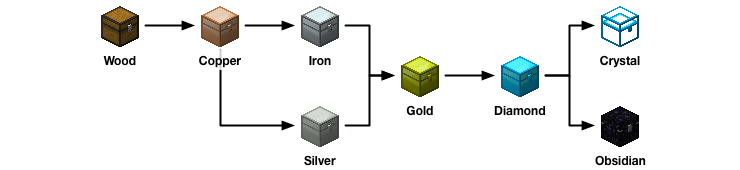

Upgrading Chests
from Iron Chests
Chest Capacities
Iron Chests adds a variety of metallic chests with steadily increasing capacity and capabilities. Here is an overview of all the new chests:
| Name | Rows | Slots | Extra Abilities |
|---|---|---|---|
| 5 | 45 | None | |
| 6 | 54 | None | |
| 8 | 72 | None | |
| 9 | 81 | None | |
| 12 | 108 | None | |
| 12 | 108 | Transparent | |
| 12 | 108 | Indestructible |
Upgrades
When you want a larger chest, you have two options: make a new chest, or upgrade an existing one. Making a new chest works exactly like you'd expect: put the materials on the crafting table, and you get the new item. But, this leaves you with the trouble of transferring items from the existing chest to the new one.
In that case, the better options is to upgrade an existing chest in place. To start, you'll need a an existing chest placed in the world somewhere. It can even have items already in it. Next, you create the upgrade you need based upon the chest you have (e.g., an Iron Chest) and the chest you want to upgrade to (e.g., a Gold Chest). In this example, you'd need the Iron to Gold Chest Upgrade.
Once you've made the upgrade, you just place it in your hotbar and right-click on the chest you'd like to upgrade. The chest will then change to be the new type in place, and without dumping any of its contents. There are quite a few different upgrades, but not every possible combination is represented. Here's a diagram showing which upgrades are possible:

About
Crafting Guide gives step-by-step tutorials for making anything in Minecraft or its many mods. Just say what you'd like to make, what you already have, it will do the rest, giving you a list of raw materials you need to collect and step-by-step instructions of how much to make of which items in the proper order. You can even ask it to include the materials and instructions for all the tools you'll need along the way!
Donate
Crafting Guide is free for all, but if you find it helpful, donations in any amount are gratefully accepted.
Get Involved
Crafting Guide is completely open-source, and you can help! Whether you want to write a recipe book (all simple JSON), or implement new features, just head over to GitHub to get started.